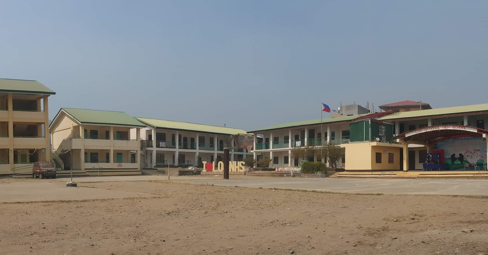

Academic Journey: A Typical Filipino Student's Path
The hallways of learning were filled with both laughter and the determined focus of a scholar. From Junior to Senior High School, I maintained consistent academic excellence, earning "With Honors" recognition every semester except in 8th grade.
Junior High School (Grades 7-10)
- Rotated through Technical and Vocational Education specialties in 7th-8th grade
- Specialized in ICT (among Agriculture, Carpentry, Cookery, Cloth Sewing, and Welding) in 9th-10th grade
- "With Honors" every semester except 8th grade
Senior High School (Grades 11-12)
- Chose STEM track
- Consistent "With High Honors" recognition
"The discipline developed during these formative years laid the foundation for future successes," recalls one teacher. "The balance between academic rigor and technical skills in ICT provided a well-rounded education."
These six years were typical of a student's journey, marked by memorable school events that forged lifelong friendships and shaped personal growth.